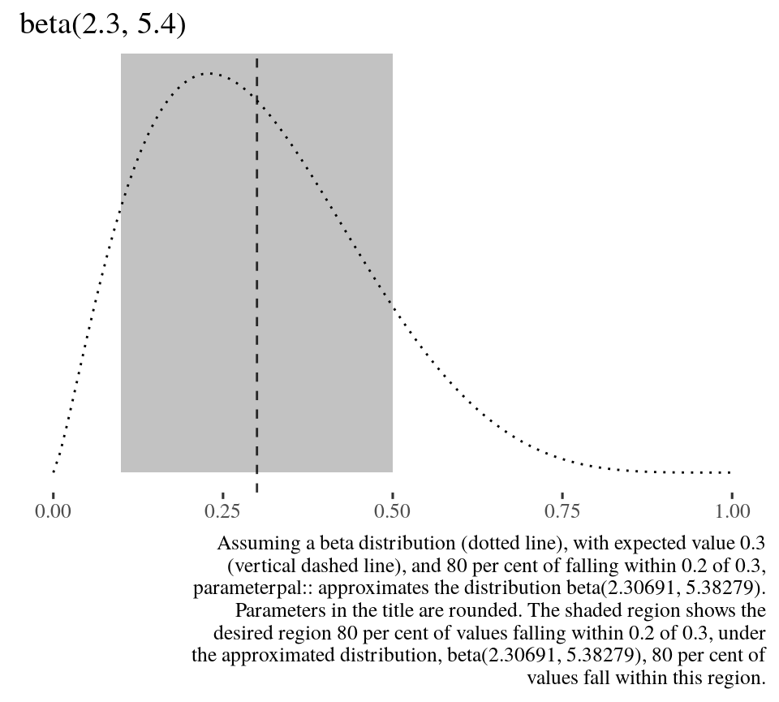
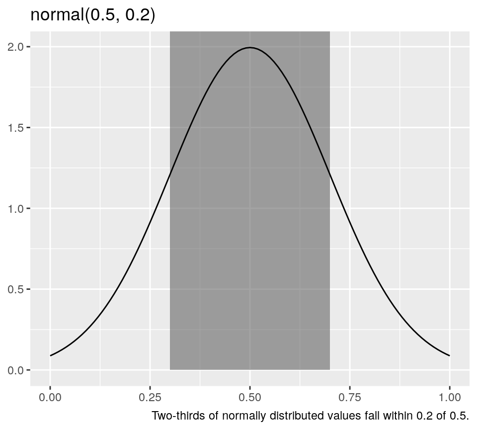
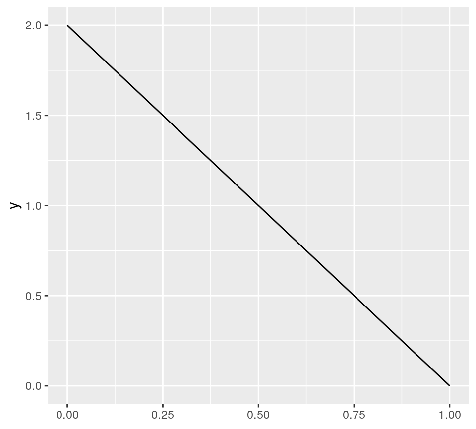

betapal.RmdDo you use beta distributions in your science? Do you find the parameters uninterpretable?
Obtain parameters for the beta distribution from interpretable conditions.
devtools::install_github("softloud/parameterpal", build_vignettes = TRUE)
parameterpal::
library(parameterpal)
usage_example <- list( expected_value = 0.3, within = 0.2, this_much = 0.8 )
Suppose we expect a value of 0.3, with 80 per cent of observations falling within a distance of 0.2 from 0.3.
That is, we expect 80 per cent of observations to fall within (0.1, 0.5). Assuming data follow a beta distribution, what are its parameters?
beta_pal(expected_value = usage_example$expected_value, within = usage_example$within, this_much = usage_example$this_much) #> $shape1_est #> [1] 2.306909 #> #> $shape2_est #> [1] 5.382787
We can plot this intuition to see the shape of the resulting beta distribution.
beta_plot(expected_value = usage_example$expected_value, within = usage_example$within, this_much = usage_example$this_much)

Specifying the width enables us to escape the ubiquitous tyranny of the arbitary bounds of 95 per cent, which doesn’t necessarily reflect our intuition, suppose we thought only
new_example_width <- 0.3
30 per cent of values fall within the interval.
beta_pal(expected_value = usage_example$expected_value, within = usage_example$within, this_much = new_example_width) #> $shape1_est #> [1] 0.3087453 #> #> $shape2_est #> [1] 0.7204056
Rather than knowing intrinsically what parameters are required for a distribution, scientists tend to have indirect knowledge. A researcher may have a sense of what value they expect a measure to take, how many observations should fall within a certain distance of that value. As well as the overall shape of the data, the distribution. Distributions are not defined in the intuitive terms the scientist has, but equational parameters commonly (but not always) \(\mu\) and \(\sigma\) for the normal distribution, \(\lambda\) for the exponential, and \(\alpha\) and \(\beta\) for the beta distribution. However, calculating the required parameters is not necessarily straightfoward, despite the conditioning we receive from the normal distribution.
# set normal distribution example parameters norm_expected_value <- 0.5 norm_within <- 0.2
For the normal distribution, obtaining the parameters from these assumptions is straightforward. The expected value and variance, which is to say, centre and spread, of the normal distribution, are both easily interpretable and translate directly to the parameters required for the distribution. So, to sample three values from a normal distribution where we expect a value of 0.5 with two-thirds of values falling within 0.2 of 0.5, we simply run the following code.
rnorm(n = 3, mean = norm_expected_value, sd = norm_within) #> [1] 0.9471038 0.6287207 0.3590946
The first parameter is the expected value, and the second, the variance. For the normal distribution, the standard deviation is interpretable. We know two-thirds of values fall within one standard deviation of the mean. If we shade this area in a visualisation, it’s convincing that two-thirds of values fall within this range.
library(ggplot2) ggplot() + xlim(0, 1) + geom_rect( aes( xmin = norm_expected_value - norm_within, xmax = norm_expected_value + norm_within, ymin = 0, ymax = Inf, alpha = 0.2)) + stat_function( fun = dnorm, args = list(mean = norm_expected_value, sd = norm_within) ) + theme(legend.position = "none") + labs( y = NULL, title = sprintf("normal(%g, %g)", norm_expected_value, norm_within), caption = sprintf("Two-thirds of normally distributed values fall within %g of %g.", norm_within, norm_expected_value) )

The beta distribution, on the other hand, requires two shape parameters, shape1 and shape2, which do not immediately reflect our intuition of what value we expect the measure to take, nor how much variance we expect.
But if we wished to sample from beta distribution, however, the parameters, shape1 and shape2, are not readily interpretable from expected value and variance. parameterpal:: provides a means of obtaining the parameters required for the beta distribution from interpretable conditions.
The beta distribution has some really nice properties. It is bounded by a minimum value of 0 and a maximum of 1, so is perfect for modeling proportions.
Under some circumstances it can mimic a truncated bell curve, as well as flexibility for other shapes, such as a truncated parabola.
But this is not intuitive. What shape do we expect \(\mathrm{beta}(1,2)\) to take? It’s hard to intuit from the parameters 1 and 2. But, we likely do not expect a negatively sloped line.
ggplot() + xlim(0, 1) + stat_function( fun = dbeta, args = list(shape1 = 1, shape2 = 2) )

This code was developed for softloud/simeta::, research software that supported softloud’s dissertation. This problem is a very small component of a larger collection of simulation functions for randomly generating meta-analysis data.
In this case, given a population \(N\), what proportion are allocated to the case and control groups? A desire to reflect the uncertainty of designed experiments motivated this code.
For example, even if case and control groups were assigned evenly, in experimental science there are many reasons individuals may drop out of the groups. Thus a proportion of \(N\) was sampled from a beta distribution (which is bounded between 0 and 1, as proportions are, too), with an intuition of how many drop outs are anticipated.
citation(package = "parameterpal") #> Warning in citation(package = "parameterpal"): could not determine year for #> 'parameterpal' from package DESCRIPTION file #> #> To cite package 'parameterpal' in publications use: #> #> Charles Gray (NA). parameterpal: Intepretable parameters for the beta #> distribution. R package version 0.0.1. #> #> A BibTeX entry for LaTeX users is #> #> @Manual{, #> title = {parameterpal: Intepretable parameters for the beta distribution}, #> author = {Charles Gray}, #> note = {R package version 0.0.1}, #> }